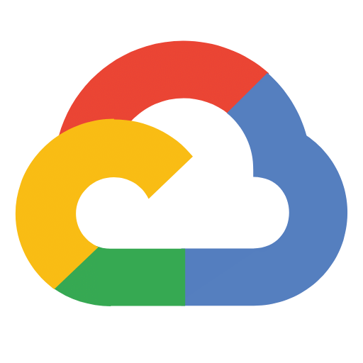
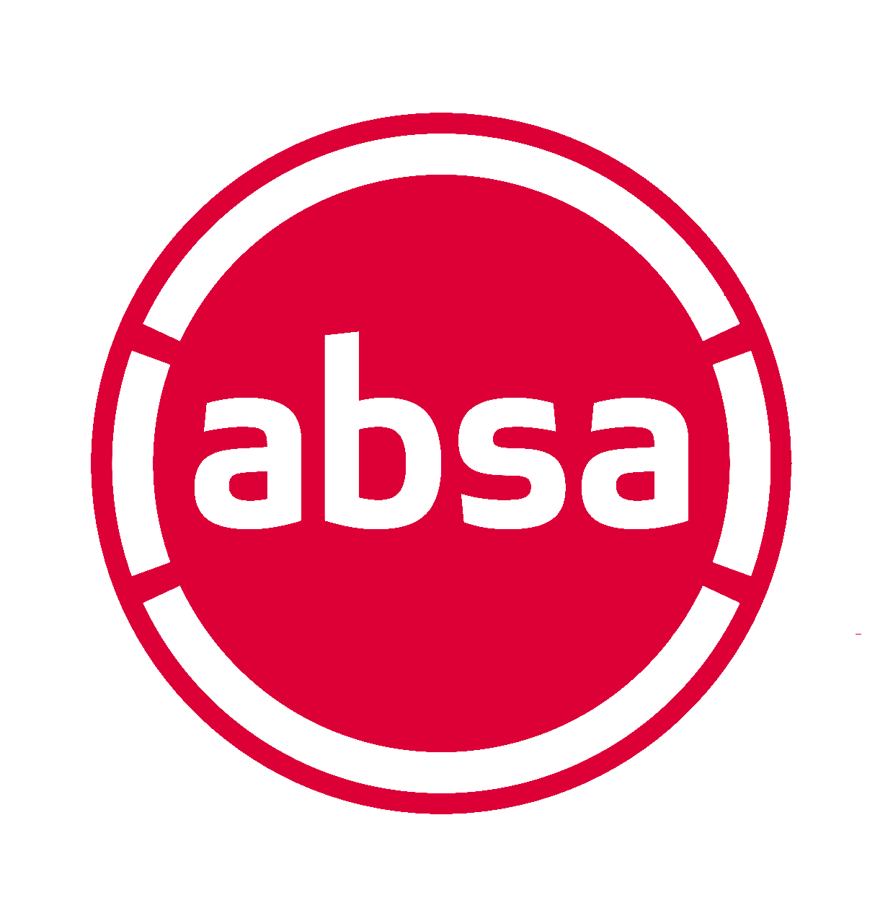
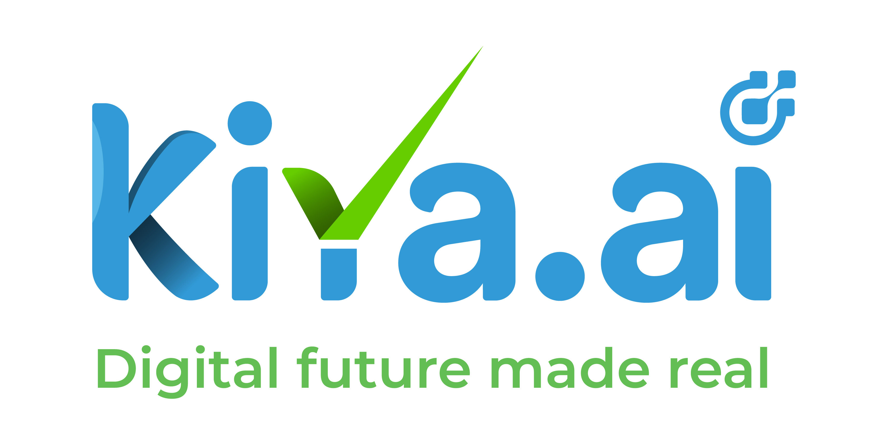
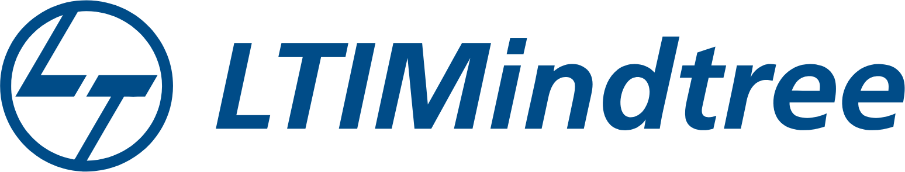

Five-plus years designing, securing, and migrating infrastructure across Azure and AWS,
with working fluency in GCP. I build resilient systems, cloud architectures, and recovery
layers designed to stay quiet when production gets loud.
Infrastructure that stays invisible — until it saves you.
I'm a Senior Cloud Engineer with over five years of hands-on experience managing
infrastructure end to end — identity, networking, security, backup and disaster
recovery, and everything that keeps a production environment upright, primarily
across Azure and AWS.
My work spans cross-cloud operations: leading migration initiatives, hardening
environments with governance and access controls, and building the monitoring
and recovery layers that turn an outage into a non-event. I bring working
fluency in GCP alongside deep Azure/AWS expertise, and I'm comfortable being
the person paged at 2 a.m. — though I'd rather build systems that don't need
to page anyone at all.
Azure Site Recovery, Recovery Services Vault, tested failover strategy.
D
Migration
AWS-to-Azure and on-prem-to-cloud migrations with minimal downtime.
Stack
The tools in motion.
Core platforms and the tooling that keeps them running.
Azure
AWS

GCP
Kubernetes
Docker
Terraform
Azure DevOps
Azure
AWS
GCP
Kubernetes
Docker
Terraform
Azure DevOps
GitHub
Git
PowerShell
Linux
Grafana
Airflow
GitHub
Git
PowerShell
Linux
Grafana
Airflow
Project Experience
Production systems I help keep alive.
Real cloud infrastructure work across banking, metaverse, VR and public digital experiences.

ABSA Bank · South Africa
ABSAVerse — Metaverse Banking Platform
Azure Cloud Engineer
01
ABSAVerse is ABSA Bank South Africa’s immersive metaverse banking experience — a virtual 3D branch where members of the public can explore digital banking spaces, interact with virtual banking agents, discover products and receive support through an engaging online environment.
A metaverse-style digital banking environment that gives customers an immersive way to discover banking products, interact with virtual agents and access support experiences without being physically inside a branch.
Public use
Customers can enter the virtual environment, explore a digital branch, learn about products and engage with virtual banking experiences. The platform is designed for large public traffic during campaigns and product launches.
My contribution
Designed and managed VNets, subnet structure, NSGs, UDRs, FortiGate policies, NAT rules, Azure Load Balancer, VM Scale Sets, Azure SQL Database and Storage, with production monitoring and troubleshooting.
Scale, security & outcomes
Configured 4 initial VMSS instances with 2–15 capacity and CPU-based scaling at 70%/30%. Used Managed Identity for Blob access, moved large media away from VM bandwidth and helped the platform support thousands of concurrent users.
Akashdarshan is a VR-enabled immersive spiritual platform that lets devotees virtually experience sacred temples, attend poojas and take guided spiritual journeys remotely. The experience can also be delivered through physical VR booths for a more immersive temple visit.
Application Gateway WAF→VMSS→Azure SQL + Storage
App GatewayWAFVMSSSSLAzure SQLStorage
What it is
A digital spiritual experience combining web, 3D and VR content so devotees can explore virtual temples, participate in pooja experiences and connect with sacred destinations remotely.
Public use
People who cannot travel to a temple can access the digital experience remotely, while physical VR booths can provide visitors with a more immersive representation of the temple journey.
My contribution
Designed and supported Azure infrastructure using Application Gateway WAF, HTTPS listeners, backend pools, health probes, routing, SSL certificates, VMSS, Azure SQL and Storage.
Challenge & outcome
Large VR assets increased application load times. Improved the storage architecture, media delivery and compression strategy to reduce loading overhead and improve the end-user experience.
QIB UK’s online banking portal provides customers with secure digital access to banking services and account-related transactions. I support the production cloud infrastructure behind this customer-facing banking workload, with a strong focus on security, availability and incident response.
A customer-facing online banking portal used by QIB UK customers for secure digital banking access and banking transactions through the web.
Public use
Customers can use the portal remotely rather than visiting a physical branch, so reliable connectivity, secure access and certificate validity are critical to the service.
My contribution
Administered Fortinet firewall rules and IPS policies, SSL renewals, VPN connectivity, Application Gateway, Azure VMs, monitoring, production changes and incident response.
Example RCA & resolution
Investigated intermittent access failures across App Gateway, firewall, backend health and certificates. Traced one incident to an expired backend application certificate, replaced it, updated bindings and restored service with minimal downtime.
Ayodhya Nagari is a public-facing digital experience associated with Ayodhya-related destinations, information and experiences. I supported the Azure edge architecture that securely serves multiple live domains from a shared Application Gateway.
App GatewaySSLDNSRoutingBackend Pools
What it is
A public-facing digital platform designed to help people discover Ayodhya-related destinations, information and digital experiences online.
Public use
Visitors can access the experience remotely to explore information and digital content before or during a visit, without needing direct access to the underlying cloud infrastructure.
My contribution
Supported Azure Application Gateway listeners, backend pools, host-based routing, SSL implementation and DNS operations across the live domains.
Architecture & outcome
Used a shared Application Gateway edge layer to route each hostname to the appropriate backend while centralizing secure HTTPS access and certificate handling.
Azure VM / VMSSApplication GatewayAzure SQLAzure StorageFortinetNetworkingSSL/TLSManaged IdentityMonitoringRCAHigh AvailabilityAuto Scaling
Path
The roles behind the projects.

Associate Consultant of Cloud
Kiya.ai · Feb 2025 — Present · Navi Mumbai
Managing and administering Azure infrastructure across VMs, storage, and
networking; led AWS-to-Azure migration and cross-cloud operations; conducted
RCA on critical production issues.
Managed and administered Azure infrastructure including Virtual Machines, Storage Accounts, and networking components.
Proactively troubleshot and resolved issues related to VM availability, storage, and networking configurations.
Handled patch management for Windows and Linux servers to maintain system integrity and security compliance.
Participated in cross-cloud operations, managing AWS infrastructure alongside Azure services.
Led the AWS-to-Azure migration initiative — strategized and executed migration plans for VMs and services with minimal downtime.
Recommended and implemented a cost-optimized solution archiving legacy AWS EC2 data to S3 Glacier Deep Archive before decommissioning.
Conducted RCA for a critical web application issue where APIs were unexpectedly stopping — traced it to idle timeout settings and resolved it by reconfiguring timeouts.
Contributed to data protection strategy using Azure Backup and Recovery solutions.

Azure Cloud Engineer (ABRS)
LTIMindtree · Jan 2024 — Nov 2024 · Hyderabad
Azure Backup and Recovery Specialist on a Microsoft project — diagnosed
client issues with KQL, executed backup procedures, and specialized in
Azure Site Recovery for disaster recovery planning.
Addressed client backup and recovery issues promptly using deep Azure Backup expertise on a Microsoft project.
Collaborated closely with clients to understand backup/recovery requirements and provide tailored solutions.
Troubleshot issues using thorough analysis and diagnostic techniques to identify root causes.
Used Kusto Query Language (KQL) to analyze logs and pinpoint underlying issues in Azure environments.
Executed backup procedures on the Azure platform, ensuring data integrity and reliability.
Implemented efficient restore strategies to swiftly recover data, minimizing downtime and data loss.
Specialized in Azure Site Recovery (ASR) for replication and disaster recovery planning, including regular failover testing.
Used Azure Migrate to facilitate smooth migration of on-premises workloads into Azure.
Azure Cloud Administrator
Jetto Technologies and Consultancies · Oct 2020 — Jan 2024 · Remote
Owned Azure AD tenant management, network architecture, security, and cost
governance across IaaS and PaaS resources for four years — the foundation
everything since has been built on.
Orchestrated Azure AD tenant management — MFA, Identity Governance, Conditional Access, custom domains, and Azure AD Connect sync.
Administered users, groups, licenses, and roles, ensuring proper access controls across the organization.
Deployed Virtual Network solutions: VNet peering, subnets, NSGs, and NAT Gateways for secure inter-resource communication.
Implemented Private and Public DNS zones for internal and external domain resolution.
Deployed and scaled Windows/Linux VMs and Virtual Machine Scale Sets for auto-scaling workloads.
Implemented high availability with Load Balancers, Application Gateway, and Web Application Firewall.
Hardened the environment with Azure Firewall, Key Vault, and disk encryption; deployed standardized Azure Landing Zones.
Designed a hub-spoke network topology with VPN/ExpressRoute connectivity, Bastion Hosts, and optimized route tables.
Built disaster recovery solutions with Recovery Services Vault, and automated routine administration with PowerShell.